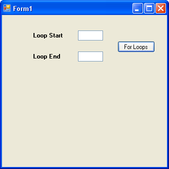

Loop Start Values and Loop End Values
<< Continues from the previous lesson
In the code from the previous page, we typed the start value and end value for the loop. You can also get these from text boxes.
Add two text boxes to your form. Add a couple of labels, as well. For the first label, type Loop Start. For the second label, type Loop End. Your form will then look something like this:

What we'll do is to get the start value and end value from the text boxes. We'll then use these in our for loop.
So double click your button to get at the code (or press F7 on your keyboard). Set up two variables to hold the numbers from the text boxes:
int loopStart;
int loopEnd;
Now store the numbers from the text boxes into the two new variables:
loopStart = int.Parse(textBox1.Text);
loopEnd = int.Parse(textBox2.Text);
Now that we have the numbers from the text boxes, we can use them in the for loop. Change you for loop to this:
for (int i = loopStart; i < loopEnd; i++)
{
answer = answer + i;
}
The only thing you're changing here is the part between the round brackets. The first part has now changed from this:
int i = 1
to this:
int i = loopStart
So instead of storing a value of 1 in the variable called i, we've stored whatever is in the variable called loopStart. Whatever you type in the first text box is now used as the starting value of the loop.
For the second part, we've changed this:
i < 101
to this:
i < loopEnd
We're using the value stored inside of loopEnd. We're telling C# to keep looping if the value inside of the i variable is less than loopEnd. (Remember, because our Update Expression is i++, C# will keep adding 1 to the value of i each time round the loop. When i is no longer less than loopEnd, C# will stop looping.)
Run your programme and type 1 in the first text box and 10 in the second text box. Click your button. You should find that the message box displays an answer of 45.
Can you see a problem here? If you wanted to add up the numbers from 1 to 10, then the answer is wrong! It should be 55, and not 45. Can you see why 45 is displayed in the message box, and not 55? If you can't, stop a moment and try to figure it out.
(There is, of course, another problem. If you don't type anything at all in the text boxes, your programme will crash! It does this because C# can't convert the number from the text box and store it in the variable. After all, you can't expect it to convert something that's not there! You'll see how to solve this at the end of the chapter.)
In the next lesson, we'll use this same Form to create a Times Table programme in C#.